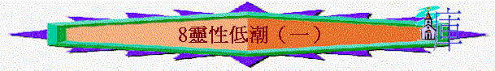

教師版
引言：信徒難免會遇到靈性低潮，有時也是無可避免的，但要緊的是不容其續繼存在，應找出導致靈性低潮的真正原因，並澈底的解決當中的難處。
Ａ）靈性低潮的現象
１）乏力乏味：
幾乎任何事都提不起興趣，甚至對人也沒有興趣，尤其是對屬靈的事感到乏味，對於靈修、聽道、讀經、祈禱、相交及事奉等產生毫不起勁的現象，明知自己不對卻缺乏力量站立起來。
２）情緒波動：
情緒不受控制，喜怒無常及急劇變化，對自己所作的事常感內疚後悔，但又對他人的安慰及勸勉發出排斥及懷疑。
３）逃避現實：
對於人、事、物都產生恐懼，首先逃避人，怕與人說話（因怕被問及現況），又避逃事（不想擔當任何事），又懼怕並幻想出難處。
４）喪失信心：
有沮喪的味道，對一切都失去了信心，甚至對 神也失去了信心（以一切沒辦法來解決及沒改變的餘地），沒有堅持的心來面對各樣事物，放棄了自己的一切。
５）心靈敏感：
無中生有，捕風捉影，多憂多慮，對別人的話特別敏感，常懷疑別人的動機及目的。
６）留戀罪惡：
靈性低潮或是因罪惡所引起，人越犯罪越易為罪惡所侵佔，人心則越留戀罪中之樂。
７）貪戀世俗：
人與 神的關係出現問題， 神的位置必是被取代，世俗必定是隨之而來，人看重的必定是世俗的名、利、享樂及放縱情慾的生活。但這樣的人仍可以假冒為善，而毫不自責。
Ｂ）靈性低潮的原因
１）脆弱靈修
ａ）不得其法：
對於靈修生活的誤解及偏差，會引致在靈修中的乏味及枯躁，從而引致人對靈修產生厭惡，再加上對所讀的經文感到艱澀，使人在靈修上停步不前，而引致靈性低潮。ｂ）閒懶安逸：
靈性低潮有時不是因難處，而是太空閒而生活又沒有計劃，引發人性中的懶惰，常再三的擔延而失卻了靈修生活。另方面閒懶使人胡思亂想，惹事生非，使自己失卻了安靜的心靈，縱使有靈修也沒有得著了，漸放棄靈修生活。ｃ）緬懷往昔：
這是太追求感受的人所遇到的，因愛慕昔日感受上的甘甜，極力去重溫那份感受，當得不到便否定了他現今靈修的實在，因而把自己困在憂悶中。這種愛慕感受的心態亦成了在屬靈追求上的攔阻，即使有得著的都為感受上而非心靈上的得著。
２）別有所愛
ａ）罪中之樂：
靈性是重於與 神的關係建立，罪是那件叫人與 神之間有阻隔的東西，即是一點點的罪，都會造成與 神交通有阻隔。信徒若犯罪而不肯離罪，他的平安喜樂必定會失去，靈性必定受到虧損。要知道罪是有勢力的，如浮沙般越踏越深，至終使人沒頂，另方面，罪確實有牠的吸引力，使人戀慕不捨，並且越有吸引力的越是危險。ｂ）世俗心思：
信徒的心思若仍與世人無異，仍愛慕及注視世上的短暫之物，不知不覺間便會被吸引過去，世俗的思慮會迷惑人的心，使人不愛主，帶來對屬靈事物的沉悶，因怕被 神的道光照出自己的敗壞來，或故意不看重 神的道，免得自己心靈受壓。又因貪戀世俗及與世俗為友的，是與 神為仇，這人如何可以得到 神的喜悅，他的靈修生活又如何可以有得著呢？ｃ）隱藏偶像：
每個人都有自己的弱點，否些在別人身上合理的事物，在我們身上或許是 神禁止我們去爭取的，因 神知道這些東西會影響我們的生命，甚至取代 神在我們身上的地位，如我們的理想、嗜好、性格等，但我們若剛硬自己的心靈，不肯順從主而放棄，必會造成我們與 神之間的阻隔，這必會引致靈性低潮。
３）控告自責
ａ）魔鬼控告：
魔鬼是一個最出色的引誘者，又是一個最切的控告者，當牠成功的引惑我們落入罪中；或我們生活不檢點給牠留地步，牠會使用不住的控告來折磨信徒，使他們灰心喪志，不敢來親近 神，每當信徒讀經、祈禱、事奉或聽道時便來指控信徒，把罪陳列出來，或在信徒心中控告他們假冒為善，使信徒慚愧自疚至不敢親近 神。ｂ）良心內疚：
有時我們的控告是來自自我，因我們有一天性是愛自我控告及自我苦待，我們總以為在認罪及對付罪上要助 神一把，不住的自我對付，甚至以自己不配再見 神。一面想見 神，另一方面又害怕見 神。
４）軟弱人性
ａ）嫉妒紛爭：
嫉妒是因別人比自己好，要勝過他人，因而引致自己落入追求世間財物及屬靈份量中，紛爭是人與人之間的關係失準而致，彼此或方面的要與對方爭競，造成心靈上的重擔及犯疑，這些心態使人不能享受與 神相交之樂。更甚的是讓撒但及世俗有機可乘，在我們的屬靈生命中作破壞的工作。ｂ）自我作崇：
太自我的人，很看重他人對自己的評價，當得不到別人的欣賞及看重，就易灰心喪志。這些人又容易為自己定下過高的標準，從而為自己製造不必要的壓力，產生對自己諸多的不滿。自我的人也很欣賞及堅持自己的看法、性格及處事手法，易與人生出磨擦，及會落入疑惑中。這些心靈影響到與 神及與人的交往。ｃ）受壓太過：
人可以承受的壓力是有限度的，最屬靈的人在過於自己所能承擔的壓力，也會出現沮喪及灰心的程形，壓力或許來自家庭、朋友、工作、困難、聖經的要求及其他等，在沒有舒壓下的人，易有逃避現實的表現，並藉軟弱來逃避責任及保護自我。
５）外在因素
ａ）身體疲乏：
因工作或疾病緣故而有的身體疲乏，確實會影響人與 神相交，因沒有基本的能耐。詭詐的人性會以此來作藉口逃避親新 神。ｂ）嘈雜環境：
因居住環境嘈雜而難有安靜的心來親近 神，在得不到理想環境下而放棄靈修。
學生版
Ａ）靈性低潮的現象
１）乏力乏味：
２）情緒波動：
３）逃避現實：
４）喪失信心：
５）心靈敏感：
６）留戀罪惡：
７）貪戀世俗：
Ｂ）靈性低潮的原因
１）脆弱靈修
ａ）不得其法：
ｂ）閒懶安逸：
ｃ）緬懷往昔：
２）別有所愛
ａ）罪中之樂：
ｂ）世俗心思：
ｃ）隱藏偶像：
３）控告自責
ａ）魔鬼控告：
ｂ）良心內疚：
４）軟弱人性
ａ）嫉妒紛爭：
ｂ）自我作崇：
ｃ）受壓太過：
５）外在因素
ａ）身體疲乏：
ｂ）嘈雜環境：